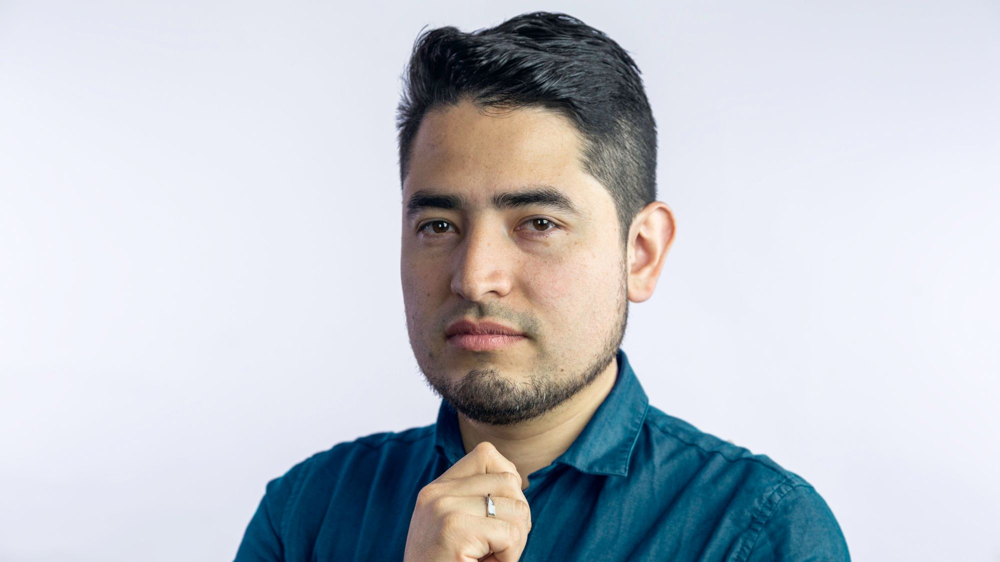

Personaje: John Freddy Vega
John Freddy Vega nació en la Colombia de los 80s. Ama, vive y respira Internet. Hoy vive entre San Francisco en California, Ciudad de México y Bogotá.
A los 12 años creó su primera empresa: Un juego de mesa con tarjetas de Pokémon, manufacturadas por él mismo y su equipo. No fue Nintendo quien acabó con su (muy rentable) negocio, sino las madres de los niños que encontraban demasiado adictivo el malévolo modelo de negocio.
Todos los jueves hace un show en vivo llamado Platzi LIVE que luego es subido al popular canal de Youtube.
Con los ahorros de ambos y a lo largo de dos años, desde un pequeño apartamento crearon la mejor plataforma de educación online del mundo hispano: Platzi. Al día de hoy tiene millones de estudiantes, cientos de empleados y oficinas en varios lugares del planeta.
En el 2016 fue declarado uno de los 20 latinos más influyentes en tecnología por CNET.